2024
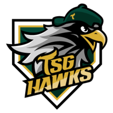
台鋼雄鷹加入一軍賽事，六隊規模成形
台鋼雄鷹於 2023 年參與二軍賽事，2024 年正式投入一軍，聯盟重回六球團規模。
第六隊・一軍首季中華職業棒球大聯盟（Chinese Professional Baseball League，CPBL）是台灣職業棒球的重要賽事組織。聯盟於 1989 年成立，1990 年 3 月 17 日正式開打，開啟台灣職棒元年。
從早期四隊出發，歷經球團擴編、轉手與重整，今日六支球團分布於台灣不同城市，持續以地方連結、球員培育與精彩賽事，拓展棒球文化。
註：此處為聯盟沿革里程碑，不代表當季即時戰績或觀眾數。
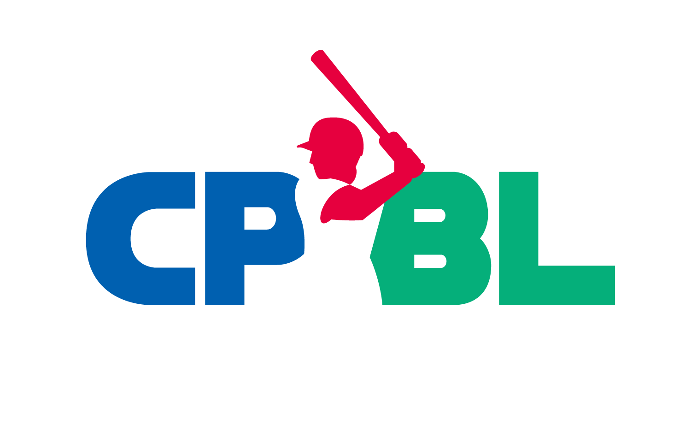
依照年代回顧聯盟擴編、球團更迭與新球隊加入的重要節點。以下以較新的事件排在上方。

台鋼雄鷹於 2023 年參與二軍賽事，2024 年正式投入一軍，聯盟重回六球團規模。
第六隊・一軍首季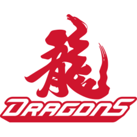
味全龍在 2019 年重新加盟後，先參與二軍賽事，2021 年重返一軍舞台。
球團復出聯盟於 2019 年通過味全龍加盟案，這支曾於 1999 年解散的創始球團重返中職。
第五隊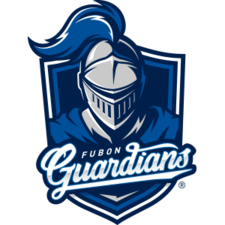
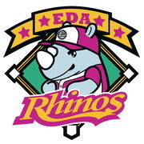
富邦育樂接手義大犀牛，球隊更名為富邦悍將，延續俊國熊一脈的球團沿革。
球團轉手・更名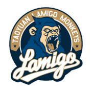
La New 熊更名為 Lamigo 桃猿，球團主場與品牌發展重心逐步移往桃園。
品牌更名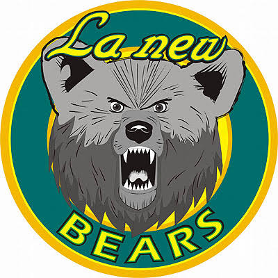
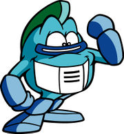
La New 接手第一金剛球隊，改名 La New 熊，開啟後續桃猿球團的歷史脈絡。
球團接手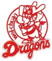
兩支早期球團退出中職，聯盟球隊數量縮減，職棒發展進入調整期。
球團解散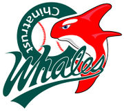
和信鯨加入後，聯盟曾達到七支球團，是中職早期球隊數量的重要高峰。
聯盟擴編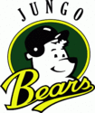
兩支新球團加入，聯盟擴編至六隊；俊國熊後續成為興農牛球團沿革的一部分。
第二波擴編兄弟象、味全龍、三商虎、統一獅四支創始球團參與首季賽事，台灣職棒正式啟動。
職棒元年・四支創始球團聯盟於 1989 年 10 月 23 日成立，為隔年正式開打奠定組織基礎。
聯盟成立中信兄弟承接兄弟象的球迷文化與球團傳承。兄弟象是 1990 年中職創始球團之一，2014 年由中國信託接手後更名為中信兄弟。球隊以台中為主要主場經營基地，黃色應援文化是球迷熟悉的代表特色。
統一獅為 1990 年中職創始球團之一，長期由統一企業經營。球團與台南有深厚連結，持續經營南部棒球市場，並以獅隊識別與主場活動凝聚球迷。
樂天桃猿的球團沿革始於 2003 年第一金剛，2004 年由 La New 接手並更名為 La New 熊，2011 年改名 Lamigo 桃猿，2019 年由樂天接手後成為樂天桃猿。這條沿革呈現台灣職棒球團品牌與經營者轉換的歷程。
富邦悍將的球團沿革可追溯至 1993 年加入中職的俊國熊，之後歷經興農牛、義大犀牛等隊名與經營轉換。富邦育樂於 2017 年接手義大犀牛並更名為富邦悍將，主要主場位於新北市新莊。
味全龍是中職 1990 年創始球團之一，曾於 1999 年解散。2019 年味全龍正式重新加盟中職，先投入二軍賽事，並於 2021 年重返一軍。球隊以台北為重要發展基地，延續經典龍隊的歷史記憶。
台鋼雄鷹是中華職棒第六隊。台灣鋼鐵集團於 2022 年提出加盟意向並完成相關審查，球隊 2023 年參與二軍賽事，2024 年正式加入一軍。球團以高雄為基地，期望深耕南台灣棒球環境。
「創始加盟」與「球團沿革起點」並不完全相同；表格將現役隊伍的主要歷史脈絡分開標示，避免把品牌更名誤認為新球團加盟。
| 現役球隊 | 沿革起點／加盟 | 重要歷史節點 | 主場城市 |
|---|---|---|---|
| 中信兄弟 | 1990 創始球團 | 兄弟象於 2014 年由中信接手並更名 | 台中 |
| 統一 7-ELEVEn 獅 | 1990 創始球團 | 長期由統一企業經營 | 台南 |
| 樂天桃猿 | 2003 第一金剛 | 2004 La New 熊；2011 Lamigo 桃猿；2019 樂天桃猿 | 桃園 |
| 富邦悍將 | 1993 俊國熊 | 興農牛、義大犀牛；2017 富邦悍將 | 新北 |
| 味全龍 | 1990 創始球團 | 1999 解散；2019 重新加盟；2021 重返一軍 | 台北 |
| 台鋼雄鷹 | 2022 通過加盟 | 2023 二軍首季；2024 一軍首季 | 高雄 |
提醒：歷史上的球隊名稱、球團經營權與加盟年份代表不同概念。本表以官方球隊沿革與聯盟公告為主要整理依據。
以 2026 年例行賽完整球季資料呈現年度勝敗與主場進場概況；戰績與觀眾人數分列，方便比較球場競爭力與球迷支持度。
| 排名 | 球隊 | 勝 | 敗 | 和 | 勝率 | 勝差 |
|---|---|---|---|---|---|---|
| 1 | 味全龍 | 67 | 53 | 0 | .558 | — |
| 2 | 統一 7-ELEVEn 獅 | 64 | 55 | 1 | .538 | 2.5 |
| 3 | 富邦悍將 | 59 | 61 | 0 | .492 | 8 |
| 4 | 樂天桃猿 | 57 | 61 | 2 | .483 | 9 |
| 5 | 中信兄弟 | 56 | 62 | 2 | .475 | 10 |
| 6 | 台鋼雄鷹 | 54 | 65 | 1 | .454 | 12.5 |
| 球隊 | 主場總人數 | 主場場均 |
|---|---|---|
| 中信兄弟 | 702,928 | 11,715 |
| 富邦悍將 | 684,434 | 11,407 |
| 統一 7-ELEVEn 獅 | 677,170 | 11,286 |
| 樂天桃猿 | 673,257 | 11,220 |
| 味全龍 | 668,083 | 11,134 |
| 台鋼雄鷹 | 501,864 | 8,364 |
2026 例行賽聯盟總進場 3,907,736 人次，場均約 10,854 人。戰績資料：荷米斯體育 2026 CPBL 全年戰績；觀眾資料：2026 球季觀眾人數統計。本表呈現各隊主場票房／進場人次；客隊不另計一份「客場觀眾」，因單場觀眾人次依主辦場地統計。資料為年度回顧，非即時比分。
球團歷史之外，球場也是城市生活的一部分。這些共同記憶，讓每一季都值得期待。
1990 年 3 月 17 日，台灣職業棒球正式開打，展開新的運動文化。
球迷、啦啦隊與球場音樂，構成獨特的觀賽體驗。
不同球團的對戰，讓每座主場都充滿故事。
從基層棒球到職業舞台，讓熱愛持續傳承。
六隊格局帶來更多對戰組合，也讓聯盟有機會持續深化球迷服務、地方連結與人才培育。
透過主場經營、地方合作與社區活動，讓球隊成為城市文化的一部分。
持續優化轉播、數據服務、球場設施與購票體驗，讓更多族群親近棒球。
從基層棒球、青棒到職業舞台，建立更完整的人才培育與發展環境。
關於聯盟成立、球隊加盟與六隊現況的快速整理。
歡迎留下對網站內容的建議。此表單為課堂專案前端互動展示，不會將資料傳送至伺服器。
賽程、戰績、票務與球隊公告可能隨球季變動，請透過官方平台確認。